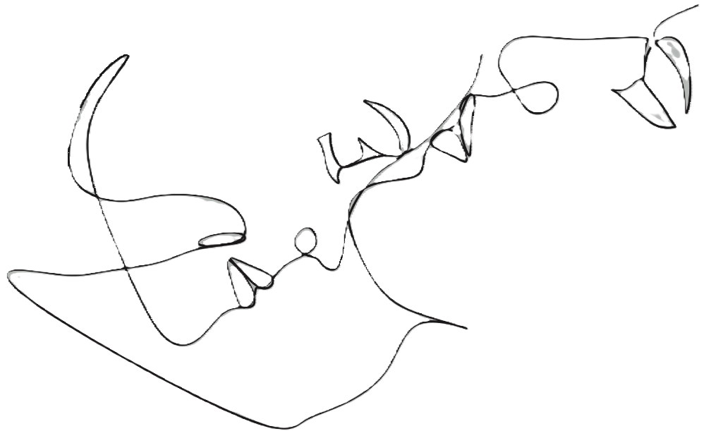

Psicóloga Integrativa
Ofrezco terapia integrativa, utilizando EMDR para abordar traumas. También brindo terapia de pareja en colaboración con la terapeuta Adriana Aguirre. Mi objetivo es proporcionar un espacio seguro para el crecimiento emocional y el bienestar.
Terapias
Terapia Integrativa
La terapia integrativa abarca un enfoque holístico y personalizado, fusionando múltiples técnicas terapéuticas para abordar la mente, el cuerpo y la psique del paciente. Su objetivo es aliviar tanto los síntomas como las causas subyacentes de los trastornos, fomentando un bienestar integral mediante la autoexploración y el autodescubrimiento.
Terapia EMDR
La terapia EMDR, distinguida por su enfoque innovador y la eficacia en la obtención de resultados positivos, se centra en la capacidad intrínseca del cerebro para procesar los eventos difíciles de la vida, promoviendo un significativo alivio emocional.
Terapia existencialista con perspectiva de género e inclusión
Desde una perspectiva de género, la terapia existencial se centra en la interacción entre la identidad y las normas sociales, y cómo estas afectan nuestra forma de ser y vivir. Su objetivo es crear un espacio seguro donde se pueda explorar y aceptar la autenticidad individual, mientras se fomenta la diversidad y se promueve la inclusión.

Terapia de pareja
Reaprender a hablar y escuchar. Ofrece un espacio seguro para abordar conflictos y fortalecer la comunicación y la conexión emocional entre las parejas, promoviendo relaciones más sólidas y satisfactorias.
Terapia Breve: intervención en crisis
Este enfoque se centra en brindar apoyo inmediato a quienes enfrentan desafíos emocionales, centrándose en estabilizar, reducir el estrés y restaurar el equilibrio. Proporciona herramientas prácticas para gestionar la situación y fomenta la resiliencia a largo plazo.